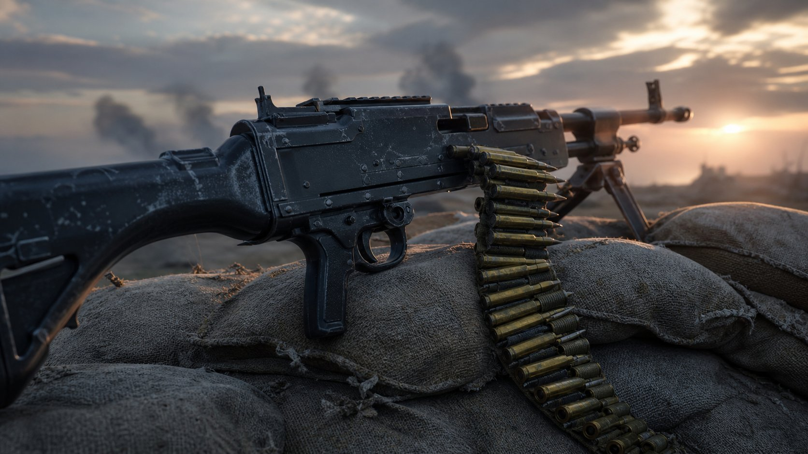

Une famille restreinte, une place précise
La famille des armes de mitigation lourde ne compte qu'une seule arme documentée dans la source de référence : le RPK16. Ce n'est pas un angle mort du catalogue, c'est une information en soi — une famille à une seule arme n'occupe pas de place dans un inventaire, elle se loue.
| Arme | Famille | Cadence | Portée | Ce que cela change |
|---|---|---|---|---|
| RPK16 | Mitigation lourde | 750 | 53 m | La seule option de la famille : à prendre ou à laisser |
| MPX | Pistolet-mitraillette | 850 | 33 m | Plus cadente, moins porté, beaucoup plus maniable |
| U191 | Fusil de marqueur | 750 | 64 m | Même cadence, portée supérieure, mais plus lourd à manier |
La lecture qui en découle : le RPK16 n'a pas besoin d'être le meilleur du catalogue pour être la bonne arme dans un cas précis. Il l'emporte quand vous voulez tenir une position à une quarantaine de mètres avec une cadence de mitigation, et que le MPX serait trop court et l'U191 trop lourd. Dans tous les autres cas, la famille voisine fait le même travail pour moins de prix en mouvement.
1. Rôle dans le meta S7
Le RPK-16 (A-tier, 650 RPM, 240 000 K) partage les mun 5.45 avec l'A545/AK-12 : synergie logistique totale. Il excelle en suppression sur Valley et Northridge : un LMG qui arrose ferme les angles, protège les rotations de loot et termine les pushes. En solo, c'est un piège à bruit — en duo/trio, c'est un mur.
2. Conseils de jeu
- Munitions d'abord : en S7, la RNG de pénétration T5/T6 a disparu — la bonne mun gagne presque toujours. Tier 3 minimum, Tier 4-5 pour les modes haut de gamme.
- Caps par mode : Normal = T4 max, Lockdown = T5 max, Forbidden = T6. Adaptez votre kit au lobby, pas à votre ego.
- Utilisez-le en suppression, pas en duel direct : 30 balles, puis rechargez derrière couvert.
- Munitions 5.45 mutualisées : un raid en A545 + RPK-16 ne manque jamais de balles.
- Poids élevé : choisissez un kit léger en secondaire.
À retenir
Un LMG en main solo = un cible ambulante. Jouez-le en équipe ou laissez-le à l'armurerie.
Meta complet
Croisez ces analyses avec la Tier List S7 complète et nos builds recommandés (A545 900 RPM, AK-12 laser budget, M24 oneshot).
Fusils de mitigation lourde : la cadence comme argument
La mitigation lourde ne se joue pas sur la cadence, mais sur la tenue du tir. Le RPK16 est la seule arme de cette famille dans le catalogue documente : 750 coups par minute en 5.45x39, avec une portee de 53 metres. Son recul vertical de 73 est le point faible : à 53 mètres de distance utile, chaque erreur de compensation se paie. L'arme est concu pour tenir une ligne de tir et non pour courir avec. C'est un choix de slot secondaire : elle prend la place que le fusil d'assaut ne peut pas prendre, celle de l'arme qui reste levee pendant que le reste de l'équipe avance.
| Arme | Calibre | Cadence | Ergonomie | Portée (m) | Recul vert. | Modes de tir |
|---|---|---|---|---|---|---|
| RPK16 Light Machine Gun | 5.45×39mm | 750 | 51 | 53 | 73 | Semi-automatique / Automatique |
3. Les règles qui dictent le mitrailleuse
Une LMG, c'est un furnish HCV : elle ne vise pas une personne, elle couvre une zone. Ce n'est pas une arme qu'on tire depuis l'épaule pendant un raid — c'est une arme qu'on installe sur un point d'appui et qu'on oublie le temps de couvrir le couloir.
- Plafonds par mode : Normal = T4 maximum, Lockdown = T5 maximum, Forbidden = T6. Le choix du mode décide de votre tier avant même votre budget.
- Plafond de valeur : 900 000 K d'équipement en Lockdown. Au-delà, le raid refuse de démarrer.
- RNG de pénétration supprimée : depuis la S7, la bonne munition traverse presque toujours. comptez sur votre munition, pas sur la chance.
- TTK allongé, headshots récompensés : la précision compte davantage qu'en S6. Le premier tir placé vaut plus qu'une rafale.
4. Les munitions à connaître
| Munition | Armes | Ce qu'elle change |
|---|---|---|
| 7.62×51mm M80 (T5) | PKM, MG3 | Le standard de la suppression : perforation et portée. |
| 8.8×24mm (T5) | M249 | La pénétration maximale, mais un coût et un poids qui interdisent lonomade. |
| 5.56×45mm AP (T5) | RPD, MG3 (variante) | Moins de portée, bien moins de poids, exploitable en mobilité. |
| 7.62×39mm BP (T4) | RPK-16 | Le compromis : ce n'est pas une LMG, mais elle en joue le rôle. |
5. Quel kit pour quel budget
| Profil | Budget | Configuration | Usage |
|---|---|---|---|
| Équipier | 200 000 – 350 000 K | PKM, 7.62×51 M80 | Suppression de groupe |
| Point fixe | 300 000 – 500 000 K | M249, 8.8×24 | Verrouillage de couloir |
| Tir mobile | 120 000 – 220 000 K | RPD ou RPK-16 | Appui en déplacement |
6. Les erreurs qui coûtent cher
- Porter une LMG en raid solo : le poids détruit votre mobilité et votre temps de réanimation.
- Tirer en marchant : la dispersion rend le tir improductif. Elle se pose, ou elle ne sert à rien.
- Oublier la ceinture de munitions : sans elle, vous avez huit secondes de tir.
- Choisir le 5.56 pour « être mobile » : à 150 m, ce n'est plus une LMG, c'est un fusil raté.
7. FAQ
Une LMG vaut-elle le coup ?
En escouade, sur un point de contention, oui. En solo, non.
PKM ou M249 ?
Le PKM pour le 7.62 accessible, le M249 pour la puissance brute et les endurance courtes.
Quel canon ?
Long pour le tir à distance, court pour rester mobile. La LMG ne se porte pas : elle se pose.
Comment l'utiliser ?
Installez-vous, tirez sur le couloir, et comptez sur vos vapeurs — le vrai danger, c'est le flank.